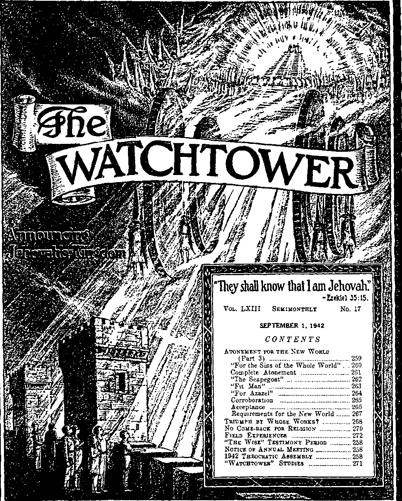

■,Y£AP.EMV.W/7NE55£5,.5A<rrtJEtiaVAti,THATI AMGODr--l-.a.43;|Z;
SHe WATCHTOWER-
Published Semimonthly By
WATCH TOWER BIBLE & TRACT SOCIETY
117 Adams Street • • Brooklyn, N.Y., U. S. A.
OFFICERS
N. II. Knorr, President W. E. Van Amburgh, Secretary
“And all thy children shall be taudht of Jehovah; and great shall be the peace of thy children.” - Isaiah 54:13.
THE SCRIPTURES CLEARLY TEACH
THAT JEHOVAH is the only true God. is from everlasting to everlasting, the Maker of heaven and earth and the Giver of life to his creatures; that the Logos was the beginning of his creation, and his active agent in the creation of all things; that the Logos is now the Lord Jesus Christ in glory, clothed with all power in heaven and earth, and the Chief Executive Officer of Jehovah.
THAT GOD created the earth for man. created perfect man for the earth and placed him upon it; that man willfully disobeyed God's law and was sentenced to death; that by reason of Adam’s wrong act all men are born sinners and without the right to life.
THAT JESUS was made human, and the man Jesus suffered death in order to produce the ransom or redemptive price for obedient ones of mankind; that God raised up Jesus divine and exalted him to heaven above every creature and above every name and clothed him with all power and authority.
THAT JEHOVAH'S ORGANIZATION is a Theocracy called Zion, and that Christ Jesus is the Chief Officer thereof and is the rightful King of the world; that the anointed and faithful followers of Christ Jesus are children of Zion, members of Jehovah's organization, and are his witnesses whose duty and privilege it is to testify to the supremacy of Jehovah, declare his purposes toward mankind as expressed in the Bible, and to bear the fruits of the kingdom before all who will hear.
THAT THE WORLD has ended, and the Lord Jesus Christ has been placed by Jehovah upon his throne of authority, has ousted Satan from heaven and is proceeding to the establishment of God’s kingdom on earth.
THAT THE RELIEF and blessings of the peoples of earth can come only by and through Jehovah’s kingdom under Christ, which has now begun: that the Lord's next great act is the destruction of Satan’s organization and the establishment of righteousness in the earth, and that under the kingdom the people of good will that survive Armageddon shall carry out the divine mandate to "fill the earth” with a righteous race.
"THE WISE” TESTIMONY PERIOD
The month of October is known by Jehovah's witnesses as “The Wise” Testimony Period. During that month the servants of Jehovah will put forth an extraordinary effort to magnify the name of the Lord and to advertise his kingdom in the earth It is good to serve the Lord and to aid others, and those persons who are wise will put forth every effort to aid those who love righteousness to seek the truth In Proverbs, chapter 8. verse 31 onward, this thought is brought to our attention. “Hear instruction, and be wise, and refuse it not. Blessed is the man that heareth me, . . . for whoso tindeth me findeth life, and shall obtain favour of the Lord.” During “The Wise” Testimony Period Jehovah’s witnesses will offer to the people the book Children and the booklet Hope, on a contribution of 25c, so that the people of good-will may receive instruction and be wise. All persons who love righteousness and want to help others find the way to life and learn of Jehovah’s kingdom will share in the witness work during this penod If you are not already associated with a company of Jehovah’s witnesses and would like to be, write to Watchtower, 117 Adams St., Brooklyn, N. Y., and we will get you in touch with the nearest company, so you may share with these servants of the Lord in the proclamation of the Kingdom. In these perplexing tunes the wise man will seek the Lord and share his knowledge with others, so “that we may be able to comfort them which are in any trouble, by the comfort wherewith we ourselves are comforted of God”.
ITS MISSION
HIS journal is published for the purpose of enabling the people to know Jehovah God and his purposes as expressed in the Bible. It publishes Bible instruction specifically designed to aid Jehovah’s witnesses and all people of good wilL It arranges systematic Bible study for its readers and the Society supplies other literature to aid in such studies. It publishes suitable material for radio broadcasting and for other means of public instruction in the Scriptures.
It adheres strictly to the Bible as authority for Its utterances. It is entirely free and separate from all religion, parties, sects or other worldly organizations. It is wholly and without reservation for the kingdom of Jehovah God under Christ his beloved King. It is not dogmatic, but invites careful and critical examination of its contents in the light of the Scriptures. It does not indulge in controversy, and its columns are not open to personalities.
Yearly Subscription Price
United States, 1100; Canada and Miscellaneous Foreign. $150; Great Britain, Australasia, and South Africa, Os American rem.t-tances should be made by Postal or Express Money Order or by Bank Draft Canadian, British. South African and Australasian remittances should be made direct to the respective branch offices. Remittarces from countries other than those mentioned may be made to the Brooklyn office, but by International Postal Money Order only.
Foreign Offices
British ________________________________ 34 Craven Terrace, London, W.2, England
Canadian ............—......... 40 Irwin Avenue, Toronto 5, Ontario, Canada
Australasian................... 7 Beresford Road, Strathfield, N. S W , Australia
South African ___________________Boston House, Cape Town, South Africa
Please address the Society in every case.
(Translations of this journal appear tn several languages.}
All sincere students of the Bible who by reason of Infirmity, noverty or adversity are unable to pay the subscription price rnaj have The Watchtower free upon written application to the publishers, made once each year, stating the reason for so requesting it. We are glad to thus aid the needy, but the written application once each >ear is required by the postal regulations
Notice to Subscribers- Acknowledgment of a new or a renewal subscription will be sent only when requested. Change of address, when requested, may be expected to appear on address label within one month A renewal blank (carrying notice of expiration) will be sent with the journal one month before the subscription expires.
Entered as second-class matter at the post office at Brooklyn, N. T., under the Act of March 3, 1875
NOTICE OF ANNUAL MEETING
Pursuant to the provision of law and the charter of the Watch Tower Bible & Tract Society, notice is hereby given that the annual busmess meeting of the said Society will be held at Pittsburgh. North Side (formerly Allegheny), Pennsylvania, at ten o’clock am , Thursday, October 1, 1942, at which the usual annual business will be transacted.
1942 THEOCRATIC ASSEMBLY
The Theocratic Assembly of Jehovah’s witnesses for this year will be held on the three days September IS to 20 inclusive While simultaneous conventions will be held in various parts of the earth, it is expected to have at least 53 joint conventions :n the United States, m as many cities, and all gatherings being tied m by land wires with the key assembly at Cleveland, Ohio The program of events and speeches will therefore be identical for all gatherings, and hence all will share equally at the Lord’s bounteous table. Every reader of The Watchtower is cordially invited to attend at one of these cities, from Friday the first day clear through to Sunday night, but at least the public address, Sundav afternoon, “Peace—Can It Lastt” Our next issue of the Watchtower will give the list of cities and the locations of the places of gathering. This announcement is made that you may have ample time to make all due preparation to attend and gam the sure and (Continued on page 271)
aeWfCTITOWER.
ANNOUNCING JEHOVAH’S KINGDOM
ATONEMENT FOR THE NEW WORLD
PAKT 3
"We have an advocate with the Father, Jesus Christ the righteous: and he is the propitiation for our sins: and not for ours only, but also for the sins of the uhole world.”—1 John 2:1,2.
JEHOVAH anointed his beloved Son to be the High Priest who makes atonement that obedient men may live in the new world and never die. The foundation of that new world has been laid, and the full establishment of that world of righteousness is sure and it shall be a “'world without end”. What politicians, world-trade traffickers, scientists, militarists, and religionists may try to set up on earth after this war for world domination will not rest upon the only Foundation that Jehovah has laid. Hence their setup will be no part of the new world for which Jehovah’s High Priest has made atonement. For such fundamental reasons man's postwar arrangement will not survive the battle of Armageddon. The “Tattle of that great day of God Almighty” will break out suddenly upon the postwar builders when they think they can cry out, “Peace and safety!” (1 Thess. 5:3) Those presuming to erect a man-made thing to dominate all the earth in the place of The Theocracy which Almighty God Jehovah has purposed to now rule shall meet “sudden destruction”. Upon the sure Foundation which Jehovah the great Theocrat has laid shall arise in glory the new world, consisting of “new heavens and a new earth, wherein dwelleth righteousness”. (2 Pet. 3:13) Only those who range themselves on the side of Jehovah's Theocracy and who seek the atonement through its High Priest will survive to see the new world and rejoice evermore.
2 The atonement which removes the sin of those who will be blessed with everlasting life was foreshadowed in the day of atonement which Jehovah’s law through the prophet Moses ordained to be observed once each year in Israel. The atonement on that day was made by God’s anointed high priest and was by him presented at the mercy seat in the Most Holy of the sacred tabernacle. There Jehovah God’s presence was represented by the miraculous cloud which appeared above and between the two golden cherubim on the mercy seat. The mercy seat was the lid of the gold-covered ark. This chest con
tained the two tables of stone whereon were inscribed the ten commandments, and which represented God's covenant with the twelve tribes of Israel.
-
3 The high priest entered the Most Holy and first burned incense on a golden censer. Thereaftei he took the blood of the bullock, which had been killed outside in the court, and sprinkled seven times with the blood immediately in front of the mercy seat. Thereby the high priest made atonement for all his house, that is, for the tribe of Levi, of which lie was a member. The bullock for the sin-offering pictured the great Victim in whom alone is the power of sm-atonement and whose blood cleanses from inherited sin. It pictured “the man Christ Jesus”. As God's High Priest he gave himself a ‘"ransom for many”, even as many as should obey God and believe on his Son as the Redeemer. (Alatt. 20: 28) He is the anointed Head of Jehovah’s Theocracy of the new world. With him in that heavenly Theocratic Government are to be associated 144,000 who constitute the “body of Christ”, of which Christ Jesus is the Head. Therefore the sprinkling of the blood of the bullock at the mercy seat pictured the atonement for the sins of such members of the “body of Christ”, his church. —Lev. 16: 3-14.
-
4 It is Jehovah's gracious will and purpose, not only that the church of 144,000 members shall live and reign with Christ Jesus in the “new heavens”, but that faithful men shall forever inhabit the earth in human perfection after the “battle of that great day of God Almighty” has cleansed the earth of all the wicked and disobedient. Since 1918 Jehovah God has been gathering together others besides the 144,000 members of his “little flock”, there being now only a remnant of members of that “little flock” yet on earth and serving as his anointed witnesses and ambassadors of the new world. The remnant have received of the atonement and will shortly finish their earthly course and have part in the “first resurrection”. Thus they wall be transferred to heavenly scenes of activity with Jehovah’s glorious High 259
Priest Christ Jesus, who also reigns as King of The Theocracy.
-
5 Those others whom the Lord God is at present gathering are his "other sheep'’. If they continue obedient and faithful to him they may be safely hid during the battle of Armageddon and shall form the “great multitude'’ of survivors who will inhabit the cleansed earth, bring forth righteous offspring and fill the earth with a righteous race. To receive life under such blessed conditions these “other sheep-’

must accept and receive of the atonement made for the new world and must prove their worthiness thereof by lovingly consecrating themselves to Jehovah God by Christ Jesus to forever do the divine will. Such “other sheep” will for the above reasons be specially interested in the next features of ancient Israel's atonement day.
“FOR THE SINS OF THE WHOLE WORLD”
-
6 Before sprinkling the bullock's blood for the sin-offering Aaron the high priest had presented two unblemished goats before Jehovah God at the door of the tabernacle. While they stood there in the court before the door the high priest cast lots and selected one goat for the Lord and the other goat “for Azazel”, this latter goat being commonly called “the scapegoat”. The account of the atonement proceedings now reads: “Then shall he kill the goat of the sin offering, that is for the people, and bring his blood within the vail, and do with that blood as he did with the blood of the bullock, and sprinkle it upon the mercy seat, and before the mercy seat.” (Lev. 16:15) This goat was the victim which provided sin-atonement ‘‘for the people”, that is, for the camp of the Israelites and the strangers sojourning among them, all of whom were encamped at a distance round about the court of the tabernacle. Hence this goat pictured the same great Sin-Offering as the bullock pictured, namely, “the man Christ Jesus.” The goats were supplied by the nation of Israel, which reminds one that Christ Jesus was born an Israelite according to the flesh and that faithful men and women were eager to be in the line of the forefathers who would produce the promised Messiah, the Christ. To make atonement, he partook of the same nature as those whom he ransoms, and he said: “My flesh ... I will give for the life of the world.”—John 6: 51.
T However, why was the goat offered as a sin-offering besides the bullock? Not to picture that there would be two sin-offerings in the realities, but it was because the bullock did not cover the nation of Israel in general; it atoned only for the select tribe of Levi, picturing the 144,000 of the “body of Christ”. The other tribes, the people of Israel in general, together with the alien sojourners among them, pictured those outside the “little flock”, to which flock God gi\es the kingdom of heaven. (Luke 12: 32) They pictured those outside the “body of Christ” but who have faith in and apply for the redemption by the High Priest Christ Jesus and who inherit life on earth under the Kingdom, The Theocracy. Christ’s sacrifice does not stop with redeeming only those who become members of “his body”. The merit of his sacrifice avails for and extends to the Lord's “other sheep” now being gathered into the one fold of the Lord, and also to their offspring who shall be brought forth after Armageddon under the Kingdom in fulfillment of the divine mandate. These “other sheep” do not sacrifice the right to earthly hfe but have hope to live on earth as humans forever. They consecrate themselves to Jehovah now and are baptized, but they are not “justified”-as are the members of the "little flock”. Justification now is for the purpose that the “little flock” may be taken into the covenant by sacrifice and may for ever sacrifice their right to human life which they received by justification through Christ Jesus. Hence in the type the sin-atonement is pictured as being made first for them by-the bullock.—Rom. 5:1,9,11.
-
9 Christ’s sacrifice also atones for the faithful men of old who shall soon come to life by a “better resurrection” and be made The Theocracy’s visible representatives on earth, being made “princes in all the earth” as children of the great King-Father, Christ Jesus. (Ps. 45: 16) Besides those faithful men of old there are others in the graves who have “done evil” by reason of inherited sin. That these might share in the benefits of the sin-atonement Christ Jesus shall utter his voice and call them forth in due time “unto the resurrection of judgment”. (John 3:28,29, Am. Rev. Ver.) By faithful obedience to The Theocratic Government and maintaining their integrity under the test of judgment, these shall “obtain that world, and the resurrection from the dead”. They shall live forever in that world without end, the world of righteousness. (Luke 20: 35, 36) Hence the apostle John, who was one of the “little flock”, wrote to others of the Kingdom class: “We have an advocate with the Father, Jesus Christ the righteous: and he is the propitiation for our sins: and not for ours only, but also for the sins of the whole world.” (1 John 2:1,2) Hence, in the atonement-day type, what the typical bullock left to be accomplished the Lord's goat must be used to accomplish, namely, make atonement for the camp of Israel and the sojourning strangers, all of whom pictured those whose life blessings will be on earth in the new world.
’ Note that the blood of the Lord’s goat was carried into the Most Holy of God’s presence by the one high priest, and that the high priest used this blood in exactly the same manner as that of the bullock. This is further proof that the goat's blood represents the sacrificed life of the one Victim, Christ Jesus, the same as does the blood of the bullock sacrificed for the high priest's house.
-
10 But what is signified by the sprinkling of the goat’s blood after that of the bullock? This, namely, that the application of power and value of the Sin-Offering, “the man Christ Jesus,” to those who serve Jehovah God forever on earth under the Kingdom is secondary in order. It follows after Jehovah has redeemed His royal family of sons “from among men” to be “heirs of God, and joint-heirs with Christ” in the heavenly kingdom. The faithful witnesses and prophets who lived and died before the entrance of the High Priest Christ Jesus with the value of his human sacrifice into God’s presence in the Most Holy of heaven extended from Abel to John the Baptist. These could not then get any redemptive benefit from a sacrifice that had not yet in their time been offered to Jehovah. They were first in time, but in comparing them with the members of the “body of Christ” as to the benefits of the real sin-atonement, ‘the first shall be last, and the last shall be first.’ They could not be “made perfect” before the members of Christ’s body have been made up and brought into unity with their High Priest at the temple. (Matt. 11:11; Heb. 11: 39,40) Hence it was also that the Lord's “other sheep” of the present time first began to be gathered after the great High Priest came to the temple in 1918 and assembled the remnant of his body members into unity there under the Theocratic rule.—Mal. 3:1-4; 1 Thess. 4:13-17; 2 Thess. 2:1.
COMPLETE ATONEMENT
” Not all the blood of the bullock and Lord's goat was sprinkled before God’s mercy seat by the high priest. The high priest used the remainder of the blood to apply elsewhere. “And he shall make an atonement for the holy place, because of the unclean-ness of the children of Israel, and because of their transgressions in all their sins: and so shall he do for the tabernacle of the congregation, that remain-eth among them in the midst of their uncleanness." (Lev. 16:16) That tabernacle symbolized the “greater and more perfect tabernacle, not made with hands, that is to say, not of this building”; its features were “patterns of things in the heavens”, as stated at Hebrews 9:11,12, 21-24. The purifying of them with the cleansing blood was done to show that Jehovah's entire arrangement for atonement for the new world is pure, holy and righteous, free from sin, by virtue of the work of Jehovah’s High Priest. The sacrifice of the members of Christ's “body” could accomplish no such effect as here pictured; only the blood of the great Sin-Offering, Christ Jesus, could do it. After Christ Jesus got through personally with his official duties, the true “holy place” and “tabernacle' could not be made more clean, sacred, or holy by anything that those of his church could do or add.
-
12 His exclusiveness in the sin-offering is further shown: “And there shall be no man in the tabernacle of the congregation when he goeth in to make an atonement in the holy place, until he come out. and have made an atonement for himself, and for his household [by the bullock], and for all the congregation of Israel [by the Lord's goat]." (Lev. 16-17) The whole work rests upon Christ Jesus, and he did a complete job, unassisted by any other creature (“man”). At this point Aaron the high priest pictures Christ Jesus alone, and not the composite Christ, that is, Jesus the Head and the dim eh his body. He is “the High Priest of our profession". (Heb. 3:1) This demonstrates once more that the Lord’s goat could not represent the church or body of The Christ, but that the goat equally with the bullock foreshadowed Jesus’ all-sufficient sacnfice. which makes full propitiation. “Who needcth not daily [each atonement day], as those high priests, to offer up sacrifice, first for his own sins [bi the bullock], and then for the people's [by the Lord's goat]: for this he did once, when he offered up himself.”—Heb. 7 : 26, 27.
” The typical picture continues: “And he shall go out unto the altar [in the court] that is before the Lord, and make an atonement for it; and shall take of the blood of the bullock, and of the blood or the goat, and put it upon the horns of the altar round about. And he shall sprinkle of the blood upon it with his finger seven times, and cleanse it, and hallow it from the uncleanness of the children of Israel.” (Lev. 16:18.19) It is here seen that the blood of both bullock and goat is treated as one blood, being poured together, proving both victims symbolize the one great Sin-Offering of Jesus. Bear in mind, also, that the “altar” on which the Savior was offered existed before ever the church did, for He is the Foundation of the church. The “altar” of the great Sacrifice was clean before Pentecost, when first the church was begotten of God and his spirit was poured out on all the consecrated ones thereof in the flesh. Hence that “altar" was clean and holy from the beginning, as much so as the typical altar whose horns of power were cleansed with the blood of the bullock and goat. As to the purity of God’s “altar" note the following:
-
14 “And almost all things are by the law purged with blood; and without shedding of blood is no remission. It was therefore necessary that the [tabernacle] patterns of things in the heavens should be purified with these [sacrifices of animals] ; but the heavenly things themselves with better sacrifices than these. For Christ is not entered into the holy places made with hands, which are the [symbolic] figures of the true [realities]; but into heaven itself, now to appear in the presence of God for us. . . . now once in the end of the world [that is. in the climax of the typical period, the end of the tabernacle-arrangement period] hath he appeared, to put away sin by the sacrifice of himself.” (Heb. 9: 22-26) How impossible, then, for politicians, and the pope and his Hierarchy', and commercial traffickers and scientists to build a clean new world as they propose!
-
15 In the type long ago the tabernacle and related things needed cleansing evidently because of God’s rule at Exodus 20: 25: “And if thou wilt make me an altar of stone, thou shalt not build it of hewn stone: for if thou lift up thy tool upon it. thou hast polluted it.” Men who served in connection with that tabernacle were naturally imperfect and sinful; besides which it was situated amidst an unclean people. The pictorial tabernacle had to be cleansed, therefore, in order for sin-atonement by animals to be made acceptably to God Most Holy. More so must the antitypical realities be pure, clean, and undefiled, that the true and perfect sacrifice might be offered to Him by Christ Jesus in approved manner. Hence the purifying of the tabernacle and related things with blood of the sin-offering victims was done to produce a ty’pical condition that illustrated the absolutely pure and sinless condition of Jehovah’s real arrangement to atone for man’s sin and for the vindication of God’s name.
“THE SCAPEGOAT”
18 Certainly Jehovah’s royal High Priest, Christ Jesus, did not have to wait till the end of 1900 years and till after his reign began, in A.D. 1914. before he made an end or could make an end of the reconciling w’ork in the “holy place”, heaven itself, in the presence of God. As a fact, the true “holy place" is God’s place of official residence, and hence it was clean and fit for Christ’s high priestly work right from the start thereof. This original clean condition, never defiled, was foreshadowed by the tabernacle condition after high priest Aaron got through reconciling the holy place with blood. Also Hebrews 7: 24-28 testifies that Christ Jesus, the everlasting High Priest, who is “consecrated for evermore”, was holy, harmless, undefiled and separate from sinners from the beginning of his sacrificial activity. God’s “altar” for Jesus’ sacrifice was never built or defiled by sinful human hands and was clean and acceptable for use. Its cleanness was not dependent upon any moral cleansing or sanctification that any or all of Christ’s followers could impart. Hence what is next described as taking place does not picture something due to be fulfilled after the operations of The Theocratic Government began in A.D. 1914.
17 Leviticus 16: 20 reads: “And when he hath made an end of reconciling the holy place, and the tabernacle of the congregation, and the altar, he shall bring the live goat.” That was the goat upon which the lot fell “for the scapegoat”, or, “for Azazel." (Verse 8, marginal reading) Its companion, the “goat for a sin offering”, had been slain and its atoning blood presented at the mercy seat in the Most Holy. Hence this “live goat” had atoning merit resting upon it and hence power to bear away sins. This fact is shown at verse 10: “But the goat over which came up the lot for Azazel shall he cause to stand alive before Jehovah, to put a propitiatory-covering over him, to send him away unto Azazel, towards the desert.” (Rotherham’s translation) This goat with atoning merit upon it therefore pictures Jesus.
” In the fulfillment on the real atonement day such “live goat” was brought by the 30-year-old Jesus Christ immediately after he consecrated to do Jehovah’s will and symbolized his consecration by being immersed in Jordan’s waters by John the Baptist. In submitting to water baptism Jesus performed his first act of obedience in carrying out the consecration he had just made. John had been baptizing sinners unto repentance, and to any onlooking Jews Jesus’ baptism might have suggested the thought: “Here is another sinner needing forgiveness and cleansing, and he comes from Nazareth, too.” Thus Jesus was not only like the “live goat”, but also like the Lord’s goat sacrificed. At that baptism Jehovah took Jesus into the covenant of sacrifice and accepted his humanity as slain, like the Lord’s goat slain at the north side of the altar. Then the Lord God manifested his acceptance and approval by sending down
his holy spirit or invisible power upon Jesus, the spirit's descent being accompanied by a manifestation of a dove which John the Baptist’s eyes were opened to see, to thereby identifv Jesus as Christ. —John 1: 31-34. '
’’Jesus, having been approved as acceptable for sacrifice on God's holy ‘‘altar”, had now been slain as the antitypical Lord’s goat by being taken into the covenant of sacrifice. Christ Jesus must thereafter be dealt with as the antitypical “scapegoat” or “goat for Azazel”, the “live goat”. Jesus was still alive in the fleshly organism or human body, but he was now a “new creature”, having just been begotten by Jehovah's invisible power to spiritual life and brought forth or acknowledged by bis heavenly Father, whose voice was heard from heaven, saying: “This is my beloved Son, in whom I am well pleased.” Being still sinless in the flesh, he yet held the right to perfect human life. Until he laid down his flesh in death he must henceforth prove his obedience perfect toward God; he must maintain his integrity toward Jehovah in defiance of and in disproof of Satan’s false charges to God about those in God’s organization. Thus, although Jesus as the antitypical Lord's goat was humanly dead, he was at the same time alive as the antitypical “live goat" over which an atonement had been made. Jesus’ human body in which he did his Father's will perfectly had been quickened or empowered by God’s animating power or spirit to serve Him faithfully unto death.
-
20 “And Aaron shall lay both his hands upon the head of the live goat, and confess over him all the iniquities of the children of Israel, and all their transgressions in all their sins, putting them upon the head of the goat, and shall send him away by the hand of a fit man into the wilderness.” (Lev. 16: 21) Aaron pictured Christ Jesus as High Priest. Like Aaron, Jesus, with both hands or with all his powers, took hold on God's work assigned to him and worked together with God as His servant and instrument. Almighty God used the hands (powers) of his Elect Servant to carry out the divine purpose respecting the true “live goat” which was “for Azazel”.
-
21 The confession of sins upon the live goat’s head did no't mean to say that Jesus substituted for Adam and took Adam's place. God’s sentence upon Adam and Eve cannot be reversed. The sins here put upon the goat's head were not sins of wickedness and rebellion, such as that of Adam in Eden, because such sins cannot be atoned for nor be borne away by someone other than the wicked, rebellious sinner himself. The sins, iniquities and transgressions of Israel here confessed were of the same kind as those of the tribe of Levi, Aaron’s house, for which the bullock’s blood atoned. They were sins and transgressions due to heredity from fallen Adam. Concerning the “live goat” which had failed to be the Lord's goat by the draw of a lot God’s law applied: “It shall be perfect to be accepted; there shall be no blemish therein.” (Lev. 22: 21) Jesus in the flesh was perfect and without blemish, like that “live goat”, yet he humbled himself to appear as a sinner, that he might be sacrificed to relieve believing men of sin and wash away their sin in his own blood. He “made himself of no reputation, and took upon him the form of a servant, and was made in the likeness of men: and being found in fashion as a man, he humbled himself, and became obedient unto death, even the death of the cross.” (Phil. 2:7,8) “God, sending his own Son in the likeness of sinful flesh, and for sin, condemned sin in the flesh.” “Who was delivered for our offences, and was raised again for our justification.” (Rom. 8:3; 4: 25) “Be ye reconciled to God. For he hath made him to be sin for us, who knew no sin; that we might be made the righteousness of God in him.”—2 Cor. 5; 20, 21.
-
22 In this way the true “live goat”, Christ Jesus, was made to appear as a sinner and thus be subject to reproach. In the wilderness of temptation Satan raised the question as to whether Jesus was the Son of God, and thereafter he caused Jesus to be reproached as a sinner, winebibber, blasphemer, bedeviled Samaritan, and seditionist. Christ Jesus subjected himself to be thus charged and treated. He never practiced religion in order to appear self-righteous and to thereby escape such false charges of sin. According to the popular religious standards of Satan's clergy crowd: “He hath no form nor comeliness; and when we shall see him, there is no beauty that we should desire him. He is despised and rejected of men ; a man of sorrows, and acquainted with grief; and we hid as it were our faces from him; he was despised, and we [blinded bi religion] esteemed him not. Surely he hath borne our gi let's, and carried our sorrows: yet we did esteem kun stricken, smitten of God, and afflicted.” Iloweier, the actual truth was: “But he was wounded for our transgressions, he was bruised for our iniquities: the chastisement of our peace was upon him; and with his stripes we are healed. All we. like sheep, have gone astray; we have [due to religious shepherds] turned every one to his own way; and the Lord hath laid on him the iniquity of us all.”—Isa. 53: 2-6.
“FIT MAN”
-
25 The “live goat” for Azazel was to be sent into the wilderness. Doubtless an underpriest in the court would conduct this goat from its position before the door of the tabernacle, at least to the gate of the court, where he could turn the goat over to someone free to take it beyond the camp of Israel. The hand of man had been needed to guide it into the court and to the tabernacle door, and now an intelligent creature was again needed because the dumb animal did not know where it was meant to go and it needed a man under Theocratic instructions to guide it to its destination. In the fulfillment of the picture Christ Jesus as the “live goat" needed no hand of any man or class of men to lead, guide or drag him. He was filled with the holy spirit of Jehovah, and he studied God's will and of his own intelligent choice lie acted in harmony with that will.
“Fit man" means, literally, '‘timely man" or “man of due season". After Jesus' baptism it was God's due time for Christ Jesus to carry out the “live goat” picture. It being Jehovah’s time, Christ Jesus willingly and submissively betook himself whithersoever God's spirit led him according to the supreme will. After the descent of the spirit upon the baptized Jesus, "then was Jesus led up of the spirit into the wilderness, to be tempted of the devil." (Matt. 4:1) Mark 1:12,13 reads: “And immediately the spirit dnveth him into the wilderness. And he was there in the wilderness forty days, tempted of Satan; and was with the wild beasts." Luke 4:1,2 corroborates this: "Jesus, being full of the holy [spirit], returned from Jordan, and was led by the spirit into the wilderness, being forty days tempted of the devil." After those days he was still suidcd in all things by Jehovah's spirit or invisible power.—Matt. 12:18,28; Luke 4:14, IS.
-
25 The sins of the world lying in the wicked one Satan were not the sms that were put upon the head of the "live goat", but the sins were of those who had come into relationship with Jehovah God, namely, the camp of Israel, together with the strangers sojourning among them. The camp had provided this “goat", even as Jesus was born of the covenant people of God, and his nature was man’s, human, but his life and life-right were from God his Father. The Israelites and strangers must have felt great relief as they saw the "live aoat" led out of the camp ami into the unknown. They must have thought: “There go our transgressions and sins. Now we are relieved of such disability in the sight of Jehovah God and can serve him henceforth." Only because the other goat, the Lord's goat, had been slain as a sin-offering for Israel, only therefore could the sins of God's covenant people be transferred from them and laid upon the head of the “live goat", that this goat might bear the transgressions away beyond recovery. This illustrates Christ Jesus serving as the Sin-Bearer, according as it is written: “And he bare the sin of many, and made intercession for the transgressors." (Isa. 53:12) Also John the Baptist testified of Jesus after His baptism: “Behold the Lamb of God, which taketh away the sin of the world!" that
“FOR AZAZEL"
26 By the “live goat” the iniquities of God’s covenant people were borne to a “land not inhabited", or (marginal reading), “a land of separation"; or (literally), “a land cut off,” that is, cut off from human habitation or human communities. This is not saying that there was no invisible spirit demon or host of demons out there. Doubtless out in the land beyond human habitation was where the “live goat" in reality became the “goat for Azazel". There is where the real trial and hardship came upon the “live goat". The name “Azazel" (Greek: apopompaios; Sender away) is understood to mean “Averter", or one who turns aside abuse and punishment if you please him. Hence the name designates Satan, who is opposed to sin-atonement. Because the goat bore away the sins of Israel Satan and his demons could not look favorably upon or deal kindly with it. Satan wanted men to abide in sin, unreconciled, and to perish likc himself. He was against any agent for the removal of sin. This bears out that Jesus’ real conflict was with Satan and his demon hosts. By Jesus as the “live goat" the question had to be settled on this point: Could Jehovah's High Priest be exposed to Satan’s test and yet maintain his innocence, blamelessness, and sinless state and thereby prove His worthiness to be God’s servant to lift the reproaches from Jehovah’s name and to relieve believing humankind of their sins due to inheritance from Adam ?
2T Christ Jesus was uncompromising toward this world. He followed no appeasement policy with it or its god, Satan or Azazel. The Devil got no satisfaction or co-operation from Jesus. Hence, instead of turning away persecution and reproach and punishment, Satan made that holy One his chief target and resorted to punishing Jesus for his faithfulness and unbreakable integrity toward Jehovah God. By punishment undeserved at the hands of religionists the Devil tried to force Jesus to sin and fail of continuing worthy to be Sin-Bearer for believers. The Devil was out to prove his boast of being able to corrupt and turn aside every one of Jehovah’s servants under the test and so force them to quit Jehovah because Jehovah did not shield them from persecution and reproach but permitted the test.
28 “Azazel,” the Devil, directly tempted Jesus during the forty days in the wilderness. He also used visible creatures, men, religious men, and particularly their leaders, the clergy. These punished Jesus in every way for his faithfulness and unswerving devotion to Jehovah, The Theocracy, and the truth, and for Jesus’ hatred of religion and of all iniquity. Those religionists claimed to be able to remove the sin? and transgressions of the people by religion, like Roman Catholic priests in the confession box. Indignantly the clergy scouted any true sin-bearer, such as Jesus. So doing, they served “Azazel". They were actually fighting against the people's highest good, the relieving of the people of their sins according to God’s way, the only way. In so doing they actually tried to keep all the people in sin and bring about the people's destruction by Jehovah's Executioner. By such conduct the human opposers and persecutors of Jesus as the real “live goat’’ debased themselves to the level of wild beasts of the wilderness that have no understanding and that perish. Of suchlike it is written: “Man being in [worldly] honour abideth not: he is like the beasts that perish.” "Man that is in honour [with Azazel and his world], and understandeth not. is like the beasts that perish.” (Ps. 49:12,20) The true “live goat" does not bear away the wicked sms of such ones. For the three and one-half years of his witness work Jesus as “goat” was, in effect, in the wilderness, surrounded by Azazel and his demon hosts and wild human beasts. Serpents and vipers crawl in the wilderness, and Jesus called the religious clergy a breed, nest, or generation of such crawling things.—Matt. 23 : 33; Ezek. 2:6.
25 With this live goat went away the sins and iniquities, transgressions and sins of God's covenant people, never to revert back or to be borne back to His people and charged against them again. Likely the “goat for Azazel” died a violent death, because Satan got no satisfaction out of it but hated vhat it symbolized. Likewise Jesus faithfully endured the hardships and the assaults of demons and men in the antitypical wilderness. He refused to turn back from the service God assigned to him as Sin-Bearer, or even look back. (Luke 9 : 62; Heb. 10: 38, 39) Because he did not break covenant, turn back and so leave humankind without hope in sin under Satan’s organization, Christ Jesus died, apparently forsaken of God. and hoisted on a tree at the violent hands of beastly dupes of “Azazel” and his demons.
-
30 Therefore Jehovah lets the sins of those who shall inherit the new world be dismissed without requiring of them the penalty of everlasting death for their sins, because they repent and convert or turn to Jehovah and his Theocracy under Christ. Such sins become as if swallowed up in a solitary wilderness. All this is because of what has been done in fulfillment of the double picture of the sacrificed Lord’s goat and the sin-bearing “goat for Azazel”. Rejoice in the following testimony of the Scriptures on this! “He hath not dealt with us after our sins, nor rewarded us according to our iniquities. For as the heaven is high above the earth, so great is his mercy toward them that fear him. As far as the east is from the west, so far hath he removed our transgressions from us.” (Ps. 103:10-12) “He will turn again, he will have compassion upon us: he will subdue our iniquities: and thou wilt cast all their sins into the depths of the sea.” (Mic. 7:19) “For by one offering he hath perfected for ever them that are sanctified. Whereof the holy [spirit] also is a witness to us: for after that he had said before, This is the covenant that I will make with them after those days, saith the Lord; I will put my laws into their hearts, and in their minds will I write them; then he said, And their sins and iniquities will I remember no more. Now where remission of these [sins and iniquities, by the sacrifice of the real bullock and Lord's goat] is. there is no more offering for sin."—Heb. 10:14-18, marginal reading; Jer. 31: 34.
CORROBORATION
-
31 God’s use of the “live goat’’ with the Lord's goat may correspond in meaning with the manner of cleansing the Israelite who was healed of leprosy or cleansing an entire house that was healed of that plague. Note how the procedure makes use of two corresponding creatures to effect one result: “And the priest shall go forth out of the camp; and the priest shall look, and, behold, if the plague of leprosv be healed in the leper, then shall the priest command to take for him that is to be cleansed two birds alive and clean, and cedar wood, and scarlet, and hyssop • and the priest shall command that one of the birds be killed in an earthen vessel [to catch the blood] over running water [hence not from a stagnant, stale, dead pool, but living water, to be mixed with the bird's blood].” That bird corresponds with the slain Lord's goat.—Lev. 14:1-5.
-
32 “As for the living bird, he shall take it, and the cedar wood, and the scarlet, and the hyssop, and shall dip them and the living bird in the blood of the bird that was killed over the running water.” As in the case of the “live goat” for Azazel, this dipping symbolized that the value of the life of the killed bird was transferred to the living bird, the living bird being already clean to begin with. Thereby power was conveyed to the living bird to offset sin and its penalty in others and so carry it off. Vsmg the bird's blood in the earthen vessel, the priest “shall sprinkle upon him that is to be cleansed from the leprosy seven times [perfectly, completely], and shall pronounce him clean, and shall let the living bird [stained with the blood in which it was dipped] loose into the open field.” That would be outside the camp, where all this took place. The bird was let fly away into the unknown, and God's priest pronounced the healed Israelite clean unto God, due to the blood sprinkled upon him and due to his faith in and obedience to this law and rule of Jehovah. “And he that is to be cleansed shall wash his clothes, and shave off all his hair, and wash himself in water, that he may be clean; and after that he shall come into the camp, and shall tarry abroad out of his tent seven days."—Lev. 14: 3-8.
” Leviticus 14: 49-55 describes a like procedure for cleansing an Israelite's house that was infected with the plague, and says : “And he shall cleanse the house with the blood of the bird, and with the running water, and with the living bird, and with the cedar wood, and with the hyssop, and with the scarlet; but he shall let go the living bird out of the city [where the house was located] into the open fields, and make an atonement for the house: and it shall be clean.”
-
34 The leper had not been charged with personal sin as the cause of his leprosy. Hence no sins were confessed over the live bird, but it was dipped in sin-atoning blood. This action made it appear as if the living bird was sinful and needed remission of sins by shedding of blood. (1 John 1:7; Rev. 1:5) This shows that the uncleanness of the leper or the leprous house was imputed to the living bird. Also the leper becomes clean unto God because blood of the killed bird mingled with water symbolizing divine truth is sprinkled a perfect number of times upon the healed leper. The flying of the living bird away to unknown and trackless regions pictures the bearing away of the sinful uncleanness of the repentant one into oblivion. beyond human knowledge, never to be encountered again or brought to mind.
-
35 Likewise Jesus, bearing the power and value of his human blood, ascended (flew) up to heaven to cancel the sin of believers. Jehovah will never again charge death-dealing sin against such faithful ones. Without his knowledge not even a sparrow falls to the ground (Matt. 10: 29), and he, of course, knows the location of the living, blood-stained bird. However, he looks upon it as an offset to the human sinfulness, and hence will not remember the uncleanness against the healed one any more. Jehovah lets the uncleanness of the believers be carried away by the One that bears the power of the blood, which blood cleanses from the deadly uncleanness. That One is Christ Jesus. His shed blood has cleansing power or value and he himself takes upon him the obligation of those who shall live in the new world.
-
36 Jesus' atoning sacrifice was again pictured eight days later by the lamb for the sin-offering which was offered for the healed leper “that is to be cleansed from his uncleanness”. In the case of a poor person, a bird (a turtledove or a pigeon) might be used instead of the lamb. (Lev. 14:10,19,21-23) After this provision the healed Israelite was declared clean before God and fit and worthy to be admitted back among the people of God. Only those of men who have faith and submit to like cleansing by the real atoning Sacrifice shall be admitted into and live in the new world as clean before Jehovah God.
ACCEPTANCE
-
3 T “And Aaron shall come into the tabernacle of the congregation, and shall put off the linen garments which he put on when he went into the holy place, and shall leave them there: and he shall wash his flesh with water in the holy place, and put on his garments, and come forth, and offer his burnt offering, and the burnt offering of the people, and make an atonement for himself, and for the people.” (Lev. 16:23,24) Likewise Christ Jesus the High Priest having been resurrected from the dead an immortal, divine spirit creature in the “express image of the Father’s person”, he comes no more in the flesh; the sacrifice for human sins is for ever accomplished. “Christ, being raised from the dead, dieth no more: death hath no more dominion over him. For in that he died, he died unto sin [as a sin-offering] once: but in that he liveth, he liveth unto God.” (Heb. 1:3: Rom. 6: 9,10) Like the high priest after being bathed in water, Christ Jesus came through his sin-atoning work on earth as High Priest clean, pure, holy, and with integrity maintained toward God. Xow in resurrection glory he is for ever like Israel's high priest with sacrificial garments put aside and clothed with the garments of glory and beauty. (Ex. 28.2.40) “Christ was once offered to bear the sins of many; and unto them that look for him shall he appear [in Kingdom glory] the second time, without sin [sin-offering], unto salvation.”—Heb. 9:28; 1:9; 2 Pet. 1:16-18.
SB The offerings of the rams which Aaron burned upon the altar in the court were “an offering made by fire, of a sweet savour [(literally) of a savour of rest] unto the Lord”. (Lev. 1:9, 13, 17; 8:21) They signified Jehovah's acceptance of the sin-offennu. Had Aaron not sacrificed the sin-offering and presented the blood thereof in an acceptable manner, he would not have lived to perform these burnt offerings. Hence such offerings manifested God’s acceptance of the atonement for sin, because the high priest is still fully devoted to Jehovah and renders obedient service to him joyfully. God’s glory rested upon such high priest, and now rests upon Jesus in heaven.
”“‘And the fat of the sin offering shall he burn upon the altar.” (Lev. 16: 25) This was "for a sweet savour unto the Lord”, and because “all the fat is the Lord’s”. (Lev. 4: 31; 3:16) The warm zeal, devotion and strength of Jehovah's sin-atoning One likewise belongs fully to Jehovah and is given to Him by his High Priest.—Deut. 6:5.
-
40 “And he that let go the goat for the scapegoat [for Azazel] shall wash his clothes, and bathe his flesh in water, and afterward come into the camp.” (Lev. 16:26) Such bathing was nothing more than the high priest himself had to do, which high priest pictured Christ Jesus. Since this man guiding the scapegoat pictured God’s holy spirit acting upon Christ Jesus, the man’s bathing would picture that Jehovah’s spirit is holy and clean and it moved Jesus in holiness.
-
41 Regarding sin-offerings God's law was: “And the skin of the bullock, and all his flesh, with his head, and with his legs, and his inwards, and his dung, even the whole bullock shall he carry forth without the camp unto a clean place, where the ashes are poured out, and burn him on the wood with fire: where the ashes are poured out shall he be burnt.” “And no sin offering, whereof any of the blood is brought into the tabernacle of the congregation, to reconcile withal in the holy place, shall be eaten: it shall be burnt in the fire.” (Lev. 4:11,12; 6:30) Thus the carcasses of the sin-offerings were disposed of on the yearly atonement day: “And the bullock for the sin offering, and the goat for the sin offering, whose blood was brought in to make atonement in the holy place, shall one carry forth without the camp; and they shall burn in the fire their skins, and their flesh, and their dung.” (Lev. 16:27) The burning was in a clean place. When Christ Jesus suffered on earth, being tried as by fire, he was always in a clean place or condition. However, the burning outside the camp of Israel pictured his suffering reproach as if he was not part of God's organization, but outside of it. The including of the animals’ dung and hides in with the burning made it a burning not of a “sweet savour”. This unsavory burning of remains of the bullock and Lord's goat fills in the picture which was left incomplete when the scapegoat was released in the wilderness and disappeared from our observation of its experiences there. The burning of the sin-offerings’ remains pictured Christ’s suffering for his integrity and faithfulness. So this burning completes the whole picture of suffering reproaches faithfully unto death. The burning of the carcasses of the sin-offering victims and the release of the “live goat” in the wilderness were both “without the camp”.
-
42 “And he that burneth them shall wash his clothes, and bathe his flesh in water, and afterward he shall come into the camp.” (Lev. 16: 28) His bathing was not different from that of the high priest after dealing with the sin-offerings and the scapegoat; and, besides, he was doing this crematory service for and instead of the high priest himself. Christ Jesus, under the leading of God’s spirit, which is clean and holy, voluntarily went into the reproaches and into being “made as the filth of the world, and ... the off scouring of all things”. (1 Cor. 4:13) He was not dragged unwilling to this burning. (Rom. 15: 3) In this he was an example to all his followers, and therefore the apostle writes: “For the bodies of those beasts, whose blood is brought into the sanctuary by the high priest for sin, are burned without the camp. Wherefore Jesus also, that he might sanctify the people with his own blood, suffered without the gate [of Jerusalem and its temple; in Satan s world). Let us go forth therefore unto him without the camp, bearing his reproach.”—Heb. 13:11-13.
REQUIREMENTS FOR THE NEW WORLD
-
43 The Theocratic law sets forth the requirements for those benefiting by the atonement and gaming life in the new world. “And this shall be a statute for ever unto you, that in the seventh month, on the tenth day of the month, ye shall afflict your souls, and do no work at all, whether it be one of your own country, or a stranger that sojourneth among you.” (Lev. 16:29) Laying aside their tegular work and activities in the camp on that day of atonement bespoke that no creature aside from the King of the new world, Jehovah's High Priest, either contributes anything to or participates in the sin-offering that atones for the sin of those who live in the Theocratic world. The real atonement day is past. It occupied the time from Jesus’ consecration and baptism and until he died, rose again, ascended and appeared before the great mercy seat of Jehovah God in the Holiest of all places in the universe and completed the atonement. Since then, particularly from Pentecost forward, faithful men and women on earth, beginning with the faithful apostles and their fellow disciples of Christ, have been receiving of the benefit of that atonement and being reconciled to God. It is therefore impossible for other creatures to add anything to what the great High Priest has done or to serve as channels, conveyors or instruments to pass on the benefits of his sin-atonement to others.
-
44 The self-affliction of Israel on the atonement day emphasizes this requirement, namely: That, whereas we creatures have no part in the sin-atonement, we must nevertheless show the full repentance and the godly sorrow over sin and must be converted from this unclean old world and turn unto Jehovah and his Theocratic Government of the world of nght-eousness. We must abstain from slavish work done for selfish gain or to establish our own righteousness and worthiness for everlasting life, a thing impossible for sin-born man. The remnant of the members of Christ's “body” and their companions, the Lord's “other sheep”, will not waste time trying to do such a thing, thereby deceiving themselves into such an anti-Christ effort. They will do as the great High Priest Christ Jesus left them the example to do. Instead of trying to get the world’s approval and appear respectable to it, they will abandon Satan’s organization and go forth unto Christ Jesus “without the camp” and bear Christ’s reproach in the wilderness of this world by being witnesses for Jehovah and his kingdom.
-
45 All praise to Jehovah’s High Priest for sin-atonement: “For on that day shall the priest make an atonement for you, to cleanse you, that ye may be clean from all your sins before the Lord. It shall be a sabbath of rest unto you, and ye shall afflict your souls by a statute for ever. . . . And this shall be an everlasting statute unto you, to make an atonement for the children of Israel, for all their sins, once a year. And he did as the Lord commanded Moses.” (Lev. 16:30-34) Christ Jesus, the Lord's Chief Priest, has done so, alone, by God’s grace. No man accompanied him to heaven with the merit of his human sin-offering, neither the thief who died alongside Jesus on the tree, nor any others before or after him. Till then none such had been begotten of the spirit of God and the way into the heavenly Most Holy had not been opened up to any from among humankind. (Heb. 9:7,8; John 3:13; 7:39; 2 Tim. 1:10) The typical sacrifices needed to be repeated each year on the typical atonement day because they were merely of animals whose blood could not take away sin. Christ’s sin-offering, however, is the ransom and is the all-sufficient propitiation that needs no repeating. The good effects of his sin-atonement continue for ever, and all creatures that accept and prove worthy of the benefits thereof shall live in the new world.
-
46 Jehovah’s “high priest after the order of Mel-chizedek” has come to reign, and not for any representing of his sin-offering. (Ps. 110:1-4; Heb. 7 :1-21; 5: 5, 6) He has done the required work, and all other creatures having hope of cleansing and redemption and deliverance must observe the “sabbath of rest” in Him and in what he has worked for them. (Matt. 12:5,6; Heb. 4:1-11) The great atonement day, long ago foreshadowed with Israel’s Theocracy, glorifies and makes prominent, not earthly creatures, but the great Author of atonement for the new world, Jehovah God, and his glorious High Priest thereof, Christ Jesus. “Thanks be unto God for his unspeakable gift.”—2 Cor. 9:15.
TRIUMPH BY WHOSE WORKS?
AMID the sounding of praises of those who distinguish themselves in mortal combat there is a danger for man to become brutish. How? By forgetting and falling to sing the praises of the Creator. "It is a good thing to give thanks unto Jehovah, and to sing praises unto thy name, 0 Most High, to show forth thy lovingkindness in the morning, and thy faithfulness every night. With an instrument of ten strings, and with the psaltery, with a solemn sound upon the harp. For thou. Jehovah, hast made me glad through thy work I will triumph in the works of thy hands. How great are thy works. 0 Jehovah' Thy thoughts are very deep A brutish man knoweth not; neither doth a fool understand this"—Ps. 92: 1-G, Ain Rev Ver.
Surely these words of the prophecy cannot be understood as referring to so-called "heatnen nations” or the people who never knew God. In the first instance they were addressed to native Israelites, and at the present they apply to the professed Christians and to those who have not been faithful to their covenant to do God's will. A “fool” is one void of common sense (and is sometimes called a “fathead”), who foolishly goes contrary to God’s law. He refuses reproof and thinks it smart to hide his hatred with lying lips, to justify his course against the hated ones: “He that hideth hatred with lying lips, and he that uttereth a slander, is a fool.” (Prov. 10: 18) He is a perverse creature, morally bad.
In all nations Jehovah’s witnesses have fulfilled upon them Jesus’ prophecy concerning being “hated of all men for my name's sake”. (Matt. 10:22) In certain countries the Watch Tower Society has been declared illegal. Those who oppose the Society and its work do not understand and cannot appreciate the wonderful Bible truths it publishes As one translator (Rotherham) of Psalm 92.6 renders this text: “A man that is brutish cannot get to know, and a dullard cannot understand this.” The leaders among those who oppose the Lord’s work now carried on have become brutish, and’others foolishly follow these blind leaders, and none of them understand the truth Worse, those who have once had a measure of the truth and then oppose the work the Lord is doing by the Society become entirely blind to the truth that God is giving his people at the present time Continuing in that course such are the enemies of God, because no one can knowingly oppose the work of the Lord without being opposed to the Lord himself. In the day of Jesus on earth there was a union of those who opposed him and who together took counsel for his death There are manv things coming to pass at the present time to indicate that the opposers of the Lord's work are trying to unite and will unite in their efforts to destroy God's message and his work on the earth. They will not succeed
Through the centuries past wicked men have gone on practically unhindered. There is a fixed period of time within which God permits such without interference That time has come to an end and the workers of iniquity will be cleared out. To that effect Psalm 92-7 reads. “When the wicked spring as the grass, and when all the workers of iniquity do flourish, it is that they shall be destroyed for ever.” This seems clearly to foretell a combination of wicked men, and their organization, which Satan will use against God’s people and against His work. In the past the servants of the Lord have been ill-used and have suffered much at the hands of some wicked men, but according to Psalm 92 there comes a time when many workers of iniquity are agreed upon one thing and that thing is the opposition to the work of Jehovah's people on earth
In spite of the global war now devastating the earth Jehovah God through Christ his King sends out his message of the Kingdom as never before in lands fighting the totalitarian monstrosity. The religious clergy as a unit are opposing this work and using all their power in an attempt to stop it. Those who have once had some truth, and who now oppose, find aid and allies in the clergy and the principal of their flock As Judas made an alliance with the clergy, it is to be expected that his counterpart will do likewise now.
But these things do not at all disturb those who love and serie God New courage and strength is given his faithful remnant by the knowledge that they are the Lord's anointed ones or commissioned witnesses, and that he has gathered them together unto himself, and that they are in the ‘’secret place of the Most High” and under the special care of Jehovah. and that to their side he is gathering an unnumbered multitude of persons of good-will who present themsehes as companions m God's service The tact that the experiences of the anointed remnant fit the prophecy is proof that it has reference to them. When the physical i..<-ts appear clearly before them, then it can be truly said. ‘This is what was spoken by the prophet of God ’ They see the lawless increasing and the workers of iniquity blossoming. and at the same time they see the Lord s special protection for the faithful Add to this the further testimony of the apostle Paul, at 1 Corinthians 10:11, that whatso-exer v.as written aforetime was written for the comfort of the true followers of Christ, and these prophecies afford further assurance to the people of Jehovah God that he Mill furnish all the needed protection for them
Therefore, instead of their being discouraged or even disturbed by the arising of the enemy like the grass in the springtime, God's prophet speaks for them words of confidence and all the faitliful with one accord sing m defiance of the springing wicked ones: “They shall be destroyed for ever. But thou, 0 Jehovah, art on high for cxermore For, lo, thine enemies, 0 Jehovah, for, lo, thine enemies shall perish , all the workers of iniquity shall be scattered But my horn hast thou exalted like the horn of the xxild-ox: I am anointed with fresh oil ”—Ps. 92.7-10, Am Zi'cv Ter
Much is written in the Scriptures concerning anointing, and it appears that there are two specific things to Minch the Mord anointing applies First, when God selects a servant and assigns him to an office and to perform a specific M’ork, God anoints such servant, as in the cases of Israel's high priest, and David, Elisha, captain Jehu, and others Such is an authoritative designation to office The anointing Mith oil is symbolic thereof. The anointing carries with it the authority to act in God's name As a counterpart of the anointing of the high priest Aaron to priestly service in the tabernacle is the anointing of Jesus with the spirit of Jehovah and to be the executive officer of the Most High.
There is also an anointing mentioned in the Scriptures that means refreshment, and it is this latter anointing that is meant in Psalm 92:10. Such anointing gives refreshment and a greater ability to serve the Lord. It means the lifting up and encouraging of the servant by the Lord to go for-xxard M’ith reneM-ed zeal. Bearing upon this point the apostle James wrote concerning those xvho are spiritually sick and discouraged: “Is any sick among you? let him call for the elders of the church . and let them pray over him, anointing him Muth oil in the name of the Lord and the prayer of faith shall save the sick, and the Lord shall raise him up; and if he have committed sins, they shall be forgixen him ’’ (Jas. 5:14,15) The Lord thus uses faithful men in the church to aid and comfort others
In like manner the prophet xvrote, in Psalm 23.5: “Thou preparest a table before me in the presence of mine enemies ; thou anointest my head with oil; my cup runneth over" This anointing does not refer to the anointing to office, but does shoM- indirectly that one previously anointed to office or service is noxx- being refreshed that he max- more efficiently perform the duties of service in the office to which he has been appointed.
At the present time the anointed remnant and their devoted companions, and none other, are united in faith Lope and joyful service These have continuous refreshment from the Lord and may be sure that the Lord Mill continue to keep his people refreshed and m full xigor for his xv'.tncss M’orK. It is not numbers that gixes strength, therefore the enemy may increase in numbers far more rapidlv than the number of “other sheep" noM’ being gathered to the side of the diminishing remnant, but these latter Mill eiow stronger in the Lord The strength is in the Lord, and He will accomplish his purpose and continue to pioxide all needed strength and refreshment to his servants
God has his OM’n channel or means of earn ma forward his purposes, and will make known his truth to his people as it is due to be understood. The continued revealmen*. of his xvill comes to his consecrated ones through his chosen channel, and it may properly be likened unto a continuous floM- of cool and refreshing xvaters. The more apt illustration is that of refreshing oil poured upon the head It is Jehovah through Christ Jesus who thus comforts Ins anointed and who gives the refreshing libation Such blessings he nixes to those xvho love him and who joyfully serie his righteous cause For a like reason He said to Ins beloved Son “Thou lovest righteousness, and hatest xxickedness, therefore God, thy God, hath anointed thee M’ith the oil of gladness aboxe thy felloxvs " (Ps 45:7) The “servant" class has alreadx received a like anointing or refreshment because it i^ a part oi the ’servant in whom Jehovah delights' and for mIiopi lie shows his special care
Note that Psalm 92.10 (A It 1’ ) saxs- “I am anointed with fresh oil", meaning that God has given Ins serxants some new refieshing blessing and which is a token of the love and care Jehovah has and exercises toward his faithful people. The anointed "seivant'’ class is God's special choice, and none can have this faxor xvithout reccixing the anointing to an official place in his organization It is therefore the anointed class that in time of need continuous!} receives the anointing with fresh oil that makes glad the heart; that is to say, this class is specially cared for and refreshed by the Lord himself; and the Lord's “other sheep", as the faithful companions of the remnant, share the grand refreshment. Engaged in the joyful service of God and his kingdom all these knoxx- that opposition cannot hinder such xvork, but that God's work xvill continue to go forxvard until it is finally completed and until he has accomplished his purposes through Christ. So the remnant now say, ‘As a wild ox confidently lifts his head and enters the fray, feeling strength in the power of his horns, sb now with full faith and confidence the faithful continue to press the battle to the gate and know that victory shall be the result because their strength is in the Lord and nothing can defeat his power.’ The Devil’s organization cannot stop such an army, because the Lord Jesus Christ is leading and Jehovah’s banner of love and unlimited power is over the "servant'’ and the servants are marching to victory.
In extension of that outlook of triumph Psalm 92.11 reads: “Mine eye also shall see my desire on mine enemies; and mine ears shall hear my desire of the wicked that rise up azainst me.” This cannot mean a malicious desire of any of Jehovah’s people to have a personal spleen satisfied azainst the enemy. The desire is to see God’s enemies destroyed. and the prayer is that God’s name may be completely vindicated
Upon every side the faithful see the foes of the truth working in opposition to the Lord, but their activity in no wise disturbs the faithful, because these fully appreciate the fact that if they have set their love upon Jehovah, God will shield and protect them from all harm. He gives to them the full assurance in his Word that he will preserve all them that love him. Undisturbed they therefore gaze upon their watchful foes and continue to hold fast their own integrity toward God and move forward in the work which the Lord God has assigned to them, delivering the testimony of Jesus Christ uith joy and gladness The remnant is refreshed and lifted up by the reassuring words of Psalm 91:9-11: “Because thou hast made the Lord [Jehovah], which is my refuge, even the Most High, thy habitation, there shall no evil befall thee, neither shall any plague come nigh thy dwelling. For he shall give his angels charge over thee, to keep thee in all thy ways.”
Knowing that the time is at hand when the name and word of the great Jehovah will be vindicated, the remnant together with their beloved companions stand forth and joyfully sing in unison: “Jehovah hath become king, in majesty hath he clothed himself. Jehovah hath clothed himself, with strength hath he girded himself. surely he hath adjusted the world, it shall not be shaken. Established is thy throne from of old, from age-past time art thou. The streams have lifted up, 0 Jehovah, the streams have lifted up their voice, the streams lift up their crashing: bej ond the voices of many waters, more majestic than the breakers of the sea, majestic on high is Jehovah. Thy testimonies are confirmed with might, to thy house befitting is holiness, 0 Jehovah! to length of days.” (Psalm 93, Rotherham) Jehovah God has become King, because he has taken up and is exercising his power and authority by and through his glorious Son, Christ Jesus. The day of iniquity must now come to an end, because God has declared as much. Satan's organization must now be cleared out from the universe, that righteousness may fill its place, to the unfading vindication of Jehovah’s name. In the righteous works of His hands shall all his faithful and obedient servants triumph
NO COME-BACK FOR RELIGION
XIIRIST EXDOM’S'’ loss for ever of her greatest I opportunity is strikingly illustrated in the ex-penence of Shebna. once the treasurer and scribe of King Hezekiah. Eliakim, a contemporary of Shebna, was then placed in a position of responsibility over the household of the king of God's typical Theocracy. The meaning of the names seems to throw light upon the matter under consideration Every name given by the Lord God in his Word appears to have a deep meaning “Shebna" is defined by some as meaning growth and tender youth. Another defines it as meaning one “who rests himself". Both of these meanings seem to apply, to indicate one who rests in himself and not in Jehovah God, therefore one who is proud and self-centered and selfish, and who is active like a growing youth in behalf of self. "Eliakim" means “whom God will raise up or ordain, establish, strengthen and help”.
Shebna for a time held the most responsible position in King Hezekiah’s house, being prefect of the palace. It was the custom of the nobles of the kingdom of Judah to hew out for themselves sepulchers Shebna evidently was a foreigner, but, marking the course taken by the nobles and exalted ones and feeling his own importance and being proud and ambitious to shine, he did the same thing for himself as the natives. Jehovah God sent his prophet Isaiah, who denounced Shebna, telling him that he would be demoted and disgraced and that God would raise up Eliakim in his stead to fill the important office.
Isaiah 22:15-19 reads: “Thus saith the Lord God of hosts, Go, get thee unto this treasurer, even unto Shebna, which is over the house, and say, What hast thou here? and whom hast thou here, that thou hast hewed thee out a sepulchre here, as he that heweth him out a sepulchre on high, and that graveth an habitation for himself in a rock? Behold, the Lord will carry thee away with a mighty captivity, and will surely cover thee. He will surely violently turn and toss thee like a ball into a large country: there shalt thou die, and there the chariots of thy glory shall be the shame of thy lord’s house. And I will drive thee from thy station, and from thy state shall he pull thee down.”
Shebna, like the religious leaders of today, thought he was in a secure place. He felt his importance and that the king largely depended upon him But he was disgraced by being demoted. In contrast with that, the prophet says. “And it shall come to pass in that day, that I will call my servant Eliakim, the son of Ililkiah. and I will clothe him with thy robe, and strengthen him with thy girdle, and I will commit thy government into his hand . and he shall be a father to the inhabitants of Jerusalem, and to the house of Judah. And the key of the house of David will I lay upon his shoulder; so he shall open, and none shall shut; and he shall shut, and none shall open And I will fasten him as a nail in a sure place; and he shall be for a glorious throne to his father’s house And they shall hang upon him all the glory of his father’s house, the offspring and the issue, all vessels of small quantity, from the vessels of cups, even to all the vessels of flagons In that day, saith the Lord of hosts, shall the nail that is fastened in the sure place be removed, and be cut down, and fall, and the burden that was upon it shall be cut off: for the Lord hath spoken it ”—Isa. 22: 20-25.
The putting down of Shebna and raising up of Eliakim occurred shortly before Sennacherib king of Assyria assaulted Jerusalem. Shebna seems clearly to represent religionists, professed Christians, who are not really unselfishly devoted to the Lord but seek their own selfish interests. They seek to enrieh themselves and believe their position is secure and they are certain of the Kingdom. They think it their chief purpose and business now to get into the Kingdom ■'because God needs them’ and that they shall go down to the grave in peace. This particularly represents those of the denominational religious systems and consecrated ones outside thereof who have manifested the same selfish spirit Because of their pride and selfishness and self-exaltation they are eut down They are tossed away, the prophet says, "like a ball” into a wide plaee and are carried away by the winds of Armageddon.
Eliakim was the son of Hilkiah, the latter's name meaning "portion of Jehovah”. Eliakim therefore fitly illustrates the faithful remnant yet on earth of the members of Christ's body and who constitute God’s “faithful and wise servant” under Christ their Head and who are Jehovah's witnesses. Isaiah 22:21-24 stated that Eliakim should be clothed with a robe, which shows divine approval; he should be strengthened with a girdle, showing him to be an approved servant of Jehovah, and the government should be committed into his hands, showing that the Kingdom interests on earth are placed in the hands of this "servant” class. The key of David's house is laid upon his shoulder.
Hezekiah being a successor to King David, it may be presumed that he demoted Shebna and elevated Eliakim to the position of trust and honor. King Hezekiah pictures the enthroned Christ Jesus who as King and Priest of the Most High God abases the class represented by Shebna and exalts the ones represented by Eliakim. This applies from and after the Lord's coming to the temple for judgment in 1918, and concerning whom it is written: “These things saith he that is holy, he that is true, he that hath the key of David, he that openeth, and no man shutteth ; and shutteth, and no man openeth.”—Rev. 3: 7.
The change of stewardship made by King Hezekiah uas in preparation for the approaching crisis which was to take place at the time of the attack of Sennacherib against Jerusalem. Sennacherib pictures the Devil with his organization in an assault upon Jehovah’s covenant people after the Lord’s coming to the temple and when
(Continued from page 258)
certain blessings the Lord has in store for all those who come m faith and with a desire to serve Hun according to truth and righteousness.
Following are Rooming Committee addresses m addition to those in our last issue:
CALIFORNIA
2230 Union St., San Francisco
GEORGIA
% T. Y. VanSant, Sr., 203 Spring St. N.W., Atlanta
1718 Gilmore St., Waycross
IDAHO
41S North Wardwell, Degan Addition, Emmett, (instead of Boise) MARYLAND
1308 Eutaw Place, Baltimore he puts down the unfaithful and bestows his favor upon the faithful servants.
It would seem that the key of the house of David represents the opportunities and responsibilities with regard to the house of the Greater David, to wit, Christ Jesus, the King of Jehovah’s Theocracy. Having become the heir of God's everlasting eovenant with David. Christ Jesus, of course, eomes into possession of the “key” to lay it iipon the shoulder of the one who should meet Jehovah’s approval The Scriptures show that when the Lord came to his temple for judgment the approved class received the “robe of righteousness” (Isa. 61.10), and to the “faithful and wise servant” class were committed the opportunities of being witnesses for Jehovah and to his "other sheep".
The Lord Jesus used the key of David to open up to the servant class, pictured by Eliakim, the door to Kingdom privileges of God's everlasting covenant with David. He "openeth, and no man shutteth”, and what he shuts no man can open. Immediately following 191S, u hen the Lord came to his temple, “organized religion" of “Christendom” repudiated Jehovah God and his King and was cast away. Likewise with the "evil servant” class. Their “nail” was thought to be secure, but was cut down b> the Lord and all Kingdom privileges were dropped and taken away from them. There was fulfilled more eomplvteh the rule stated by Jesus that the ‘kingdom should be taken from them and given to those bringing forth its fruits' This transfer of office and opportunities took place before the great assault of totalitarian powers upon Gods oisrani-zation as pictured by Sennacherib marching against Jerusalem. Thus it precedes the battle of Armageddon
Of the faithful “remnant” class under their Head Christ Jesus Jehovah says, as of Eliakim: “I will fasten him as a nail m a sure place.” This does not mean mciely the individuals, but every one who abides faithfully in the remnant unto the end. collectively All the vessels of truth are committed into the hands of the faithful servant class The great privilege is laid upon this class Therefore the tremendous responsibility and privilege that is gnen to those of the temple class and who are of the sen ant class at this time In the language of the prophet, these, as long as they remain faithful to Jehovah. God, must be witnesses following in the steps of Him whom (.od has given “for a witness to the people, a leader and commander to the people". (Isa 55:4) These on earth, theiifoie. must under Christ take the lead in directing the people of good-will, the Lords “other sheep", into the waj that God has prepared for the salvation of humankind
NEBRASKA
2442 S 15th St , Lincoln
OREGON
201 East Mam St , Klamath Falls SOUTH DAKOTA Box 153, Deadwood Box 902, Mitchell, (instead of Sioux Falls) WISCONSIN
2661 E. Washington Ave., Madison
“WATCHTOWER” STUDIES
Week of October 4: “Atonement for the New World” (Part 3), fl 1-22 inclusive. The Watchtower September 1, 1942
Week of October 11: “Atonement for the New World” (Part 3), fl 23-46 inclusive, The Watchtower September 1, 1942.
SWISS MEET IN THEOCRATIC ASSEMBLY
Flash by cable to the president of Watch Tower, Brooklyn, N.Y.. April 5: “Over three thousand Swiss friends assembled Theocratic Convention. Zurich. Psalm twenty-three, verse five. Book Children released; wonderful in our eyes. Resolution voted. Heartiest greetings. United with you in Kingdom work. [Signed] Jehovah’s witnesses in Switzerland.”
Further information was given later by letter as follows: “That this general convention could be held in the most beautiful and most distinguished building of the city of Zurich was wonderful in our eyes; and it must also be said that this assembly of God’s people in Switzerland was not only the biggest, but also the most blessed held up to this time. True, there have formerly been large general conventions in Switzerland^ but none counted an attendance exceeding 3,000 as this year, and this multitude was made up exclusively of Swiss brethren and companions. Surely the clearest evidence that the ‘great multitude’ is manifesting itself also in this country.
“The preparations already for this convention were visibly blessed of the Lord; for everything proceeded without the slightest friction, both as regards the authorities and the management of the eonvennon building and as to the hotel owners. A few days before the assembly the preparatory work was completed and we were as children awaiting in suppressed excitement the moment for the great event to arrive. And see, nearly 2,000 brethren arrived already on the first, and by Sunday the number had steadily increased to far above 3.000' Surprise followed upon surprise : a 32-page report on your general convention in St. Louis and that in England. then the chief discourse on Daniel, chapter eleven [the Watchtower article on ‘Demon Rule Ending', Part Seven] , the release of the book Children on Sunday morn me, which, aroused unspeakable joy, and finally a series of films showing the works of our Lord, followed by a Resolution worded in unequivocal language.
“If a dark spot in this Theocratic general assembly could be found, it is that this manifestation was controlled by the police. However, we rather had to expect this, considering the measures which Switzerland has taken, as well as on account of the general political situation. And, after all, it was to be welcomed, that thus on the occasion of such an outstanding event the officials of the authorities once got a thorough opportunity of making our acquaintance. The functionaries who had this special duty were able to learn once for all that we are neither Communists nor Nazis, nor Fascists, nor members of the notorious "fifth column’’, as our opponents in this country have claimed, but rather that we are positive, active Christians Nevertheless we thought it right to file a protest against this surveillance with the police authorities in Zurich; for Christian assemblies are not subject to authorization.
“Children's day. The fact that the book Children was being printed and was to be released at the general convention was not known outside of headquarters. From cloth purchased in the past for binding other books of Judge Rutherford, we had a stock of nine colors sufficient for 30,000 bound volumes, and this we used for the book Children. Our artist was commissioned to prepare placards in these nine colors demonstrating Children. On the stage were
nine tables, and upon a signal eighteen brothers marched by twos into the great hall, one carrying a placard and a second provided with a supply of Children matching the placard in color. This procession aroused powerful applause, and now the children, to the number of 406, were permitted to come upon the stage and receive as a present the book in their favorite color. Before this I was privileged to address the children as well as the parents in accordance with what is said in the book itself and in the Watchtower article ‘Noah’s Day\ This scene was really marvelous, and many tears of joy flowed.
“The following is the result of the witnessing done during the Zurich convention: Over 1,200 publishers, during two and a half hours, distributed 21,961 booklets; an achievement hardly ever before reached.
“resolution
“Jehovah’s witnesses and their companions assembled in the Convention Building, Zurich, from 3d to 5th April, 1942, to the number of about 3,000 persons, hereby issue the following Declaration: . . . ‘Jehovah’s witnesses recognize the divine commission bestowed upon them . . In that Jehovah’s witnesses (formerly Bible Students) in Switzerland have now since the dawn of the new century carried out this double commission in faithful obedience to God and Christ Jesus, they have been maliciously slandered by their opposers and blamed as enemies of the people and their general welfare. Jesus said in advance, in Matthew 10:18: “And ye shall be brought before governors and kings for my sake, for a testimony against them and the Gentiles.” Jehovah’s witnesses and their friends arc fully aware that Catholic Action have made it their unchangeable goal to close down the work of the witnesses of God. for they have declared: “The fight goes on till we have accomplished our purpose: the ban and dissolution of the European headquarters of Jehovah’s witnesses (Bible Students) in Berne.” (Swiss Press Correspondence, August 1, 1940) Let Catholic Action be informed that in lending their hand to such an act, they do the same as did the scribes and Pharisees 1900 years ago against Jesus of Nazareth, the Son of God: “ ... it is expedient for us, that one man should die for the people, and that the whole nation perish not.” (John 11:49,50) Applied to our time - “Better clear out Jehovah's witnesses, who continually trouble our rest by their so-called ‘proclamation’, than that eventually a whole people take up this message and our influence exercised through religion be lost.” Whatever our opponents may intend to do, and in whatever measure they may succeed in injuring God’s faithful people, nothing will be allowed to happen but what the righteous God may permit to prove the integrity and faithfulness of his people towards Him. (Romans 8:31) Therefore Jehovah’s witnesses know not the fear of man, but they do fear through breach of faithfulness to incur the disapproval of the only true God and thus to forfeit eternal life, . . . Should censorship not permit the publication of this Resolution we would take the liberty of sending a copy direct to all the authorities of Switzerland.’ This Resolution was reported unanimously approved. Censorship did not permit publication of the paragraph of the Resolution after the quotation from Swiss Press Correspondence." t12